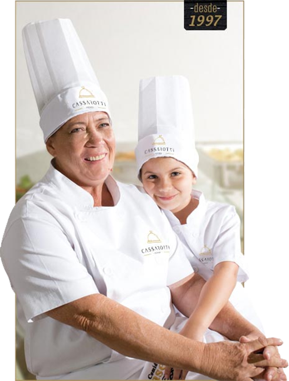

Empresas e indústrias
Refeitórios corporativos com cardápio ajustado à rotina de cada turno.
Refeições coletivas · desde 1997 · Cornélio Procópio/PR
Há quase 30 anos alimentando empresas, hospitais, escolas, canteiros de obra, o setor público e grandes eventos em todo o Brasil. Estrutura nacional, cuidado de quem começou na cozinha de casa.
Leva cerca de 1 minuto. Sem compromisso — o retorno é pelo WhatsApp.

72 milhões de refeições por ano
Certificações ISO 9001 · 14001 · 22000 · 45001
Cozinhas móveis e frota própria
Atendimento em todo o Brasil
01 A Cassarotti em números
Ano de fundação, na cozinha de Dona Aparecida, em Cornélio Procópio/PR.
Refeições servidas por ano para empresas, hospitais, escolas e eventos.
Qualidade, meio ambiente, segurança dos alimentos e saúde ocupacional.
Cozinhas móveis e frota própria para levar a operação até o seu projeto.
02 Nossa história
Em 1997, Dona Aparecida começou servindo refeições feitas com o mesmo cuidado de quem alimenta a própria família.
De lá para cá, a Cassarotti Foods cresceu alimentando canteiros de obra, indústrias, hospitais, escolas e grandes eventos em todo o Brasil — sem abrir mão do princípio simples que virou marca registrada: comer bem é questão de respeito por quem trabalha, estuda e se cuida.
Hoje somos uma operação com estrutura nacional: cozinhas móveis, frota própria, processos auditados e certificações ISO 9001, 14001, 22000 e 45001. A escala mudou. O cuidado, não.
“Quem serve muita gente não pode errar na cozinha.”
03 Para quem
Do refeitório de fábrica à maca de um hospital, da merenda escolar ao palco de um grande evento — cada operação tem seu próprio formato.
Refeitórios corporativos com cardápio ajustado à rotina de cada turno.
Alimentação hospitalar para pacientes, equipes e acompanhantes.
Merenda escolar com segurança alimentar e nutrição para cada faixa etária.
Cozinhas móveis que montam operação completa onde o projeto está.
Alimentação em escala para eventos, festivais e operações temporárias.
Marmitas e refeições entregues com temperatura e qualidade controladas.
04 Como funciona
Você conta como é a operação hoje — em cinco perguntas, cerca de 1 minuto.
Nosso comercial monta o dimensionamento, o cardápio e o formato ideal.
Equipe, estrutura, cozinhas móveis e logística entram em campo.
Qualidade, segurança alimentar e satisfação medidas de forma contínua.
Conte o que você precisa em refeições por dia e nossa equipe comercial retorna pelo WhatsApp com uma proposta sob medida.
Leva cerca de 1 minuto. Sem compromisso.
Prefere conversar agora? Chame no WhatsApp